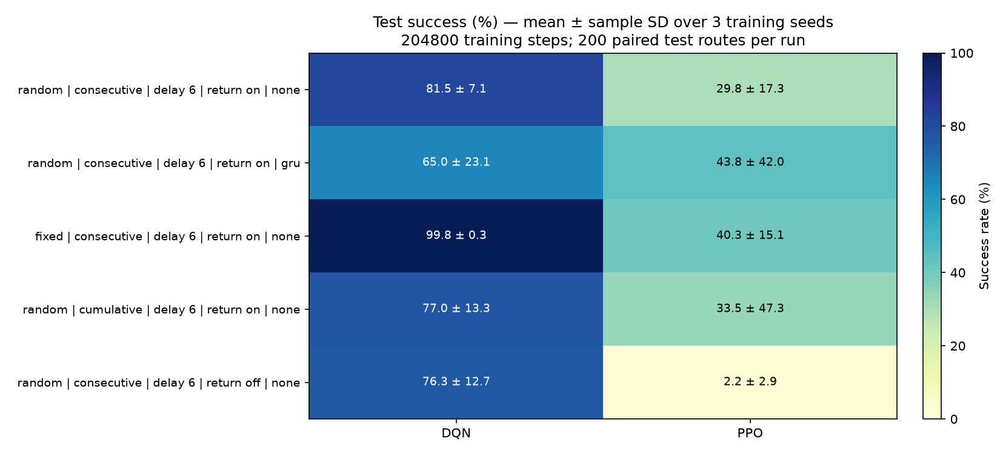
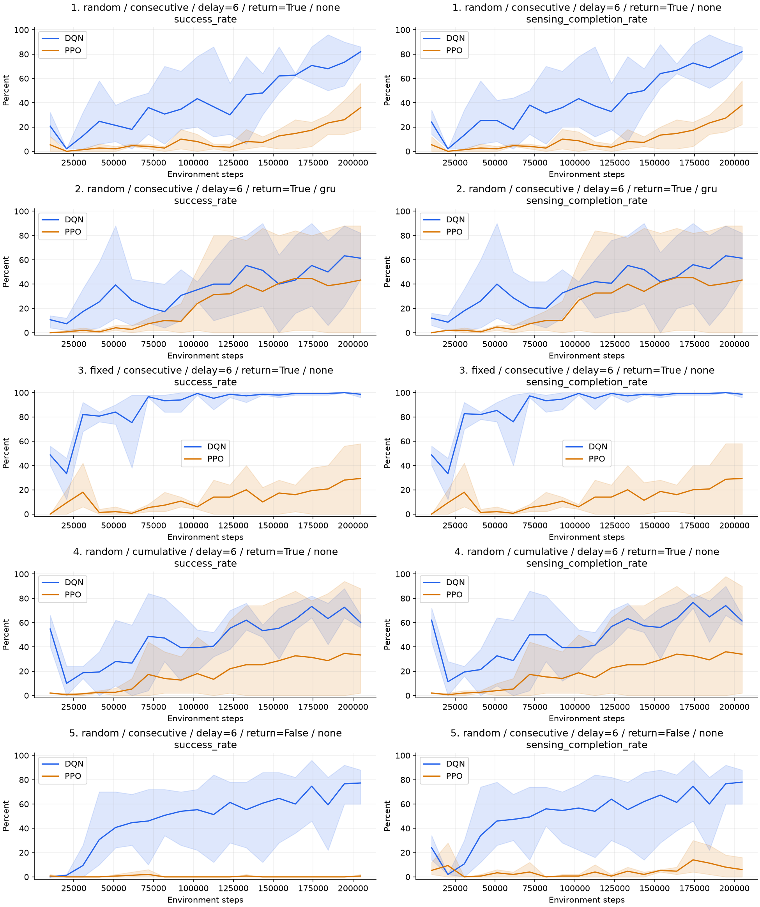
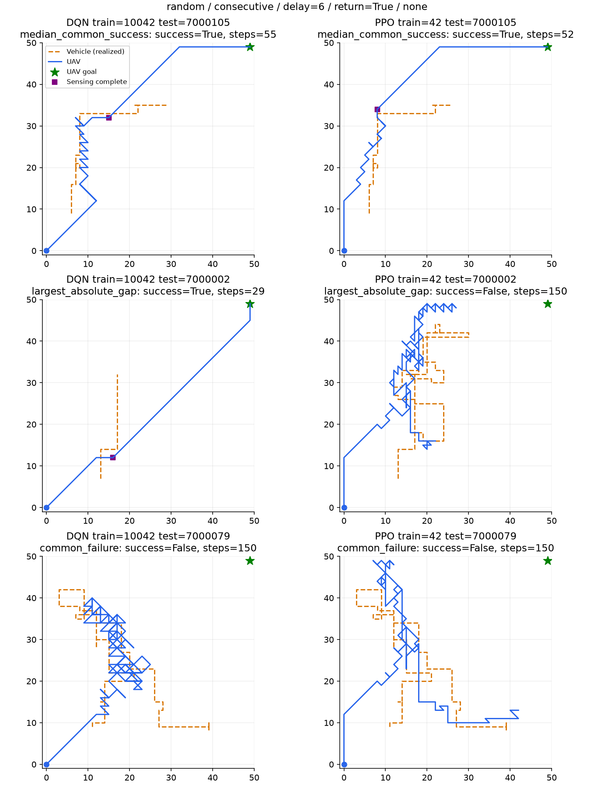
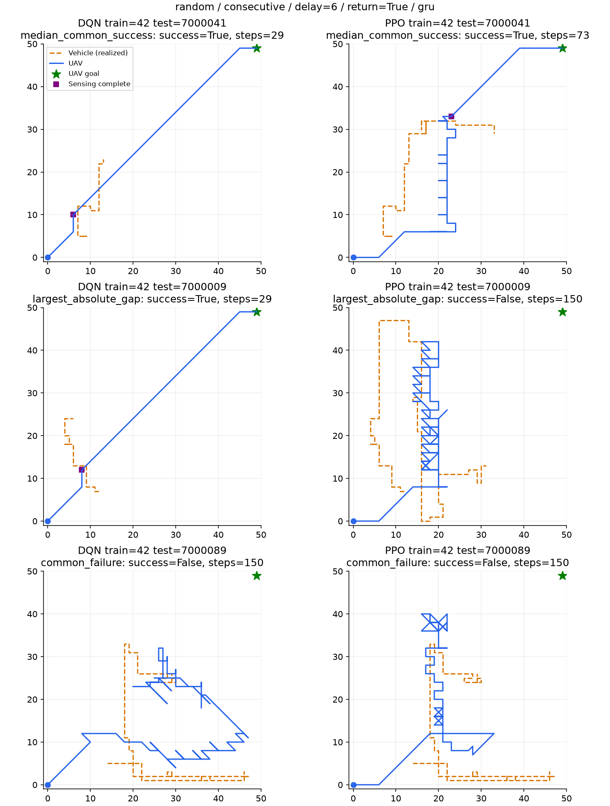
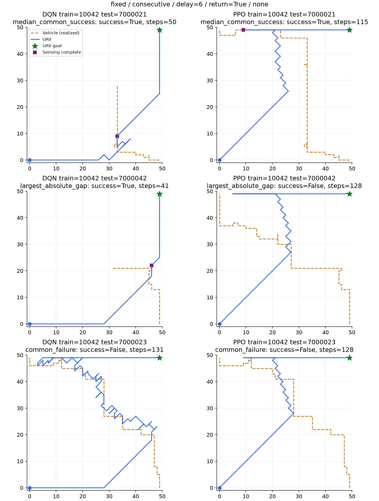
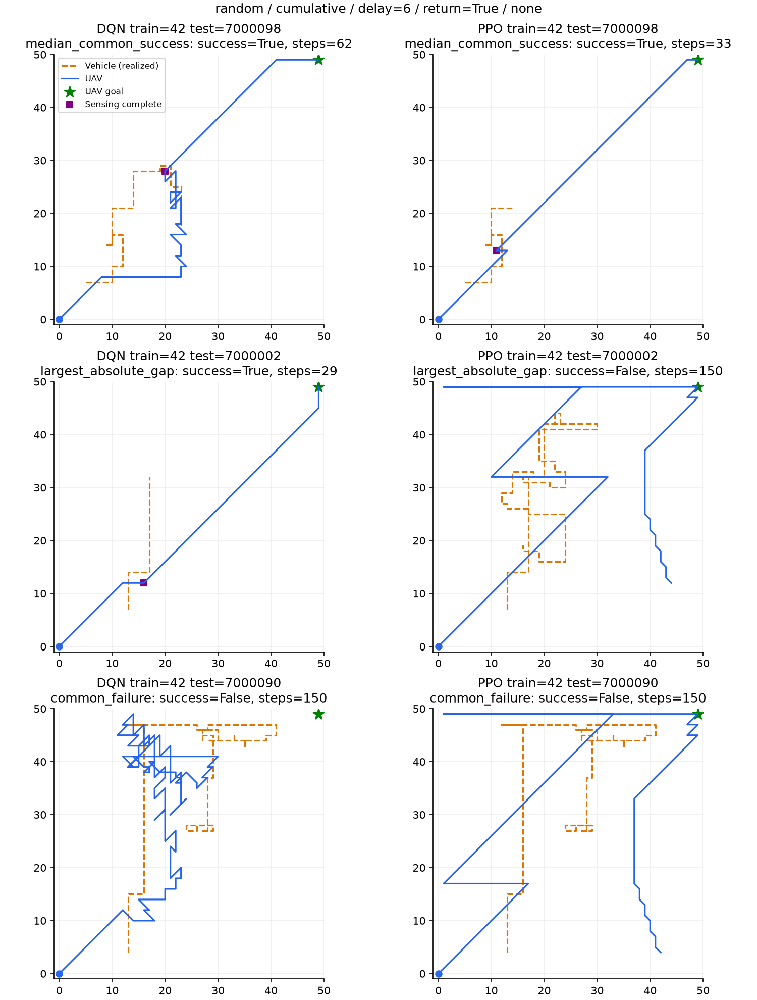
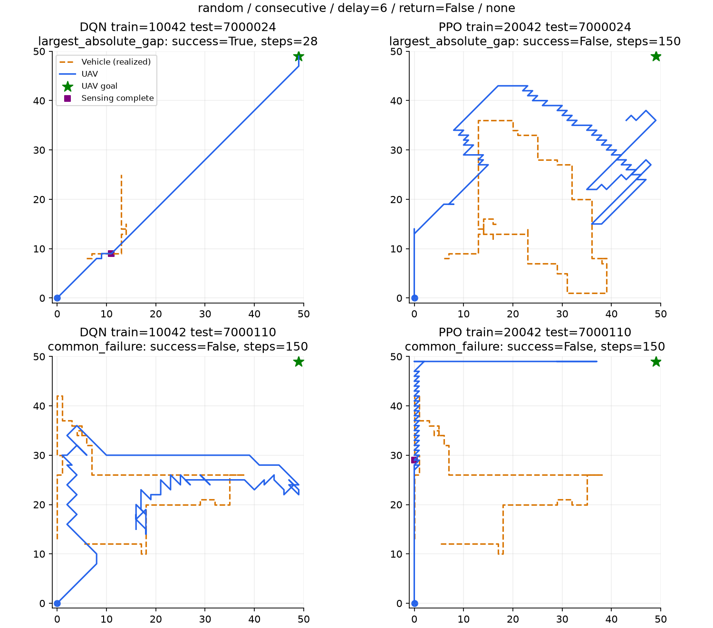

共 10 组配置 × 3 种子，30 次训练；每次 204800 环境步。 每 10240 步用固定 50 个验证种子选模；最终使用新的 200 个共享测试种子 [7000000,7000200)。同一场景内两种算法面对相同车辆路线，fixed 与 random 的路线分布不同。验证与测试均采用合法动作中的贪心选择，PPO 取概率最大的动作。三种子结果报告均值与样本标准差，逐种子列按 42 / 10042 / 20042 排列，不把复用测试路线当作独立训练重复。
隐藏层 64×3；PPO 使用 Tanh，DQN 使用 LeakyReLU。GRU 复用旧实验的冻结权重（1000 路线，30 epoch），预测偏移 (0,1,4)。奖励和环境其余参数保持一致。GPU 并行训练、CPU 在线预测和最终评估，运行耗时不是严格硬件性能基准。完整设置见 protocol.json 和 预先计划。
不含冻结预测器，无预测 DQN 优化 10641 个参数，含目标网络保存 21282 个；PPO 的 Actor＋Critic 优化 20242 个。加入预测特征后，优化参数分别为 11025 和 21010。相同环境步数对齐的是采样预算，不代表梯度更新次数或计算量相同。
自动返程开启时，完成采集后的合法动作受到最短返程路线约束；这不等于策略独立学会返程。关闭自动返程的场景单独测试完整任务学习。只在同一场景内比较两种算法，不把不同难度场景混成一个整体排名。
| 场景 | 算法 | 成功率（均值±SD） | 逐种子成功率 | 采集完成率 | 完成步数（失败=150） |
|---|---|---|---|---|---|
| 1 | DQN | 81.5% ± 7.1pp | 88.0% / 82.5% / 74.0% | 82.2% | 66.10 |
| 1 | PPO | 29.8% ± 17.3pp | 25.0% / 15.5% / 49.0% | 31.3% | 123.98 |
| 2 | DQN | 65.0% ± 23.1pp | 71.0% / 84.5% / 39.5% | 65.5% | 86.89 |
| 2 | PPO | 43.8% ± 42.0pp | 41.5% / 3.0% / 87.0% | 44.3% | 108.81 |
| 3 | DQN | 99.8% ± 0.3pp | 100.0% / 99.5% / 100.0% | 99.8% | 55.39 |
| 3 | PPO | 40.3% ± 15.1pp | 57.0% / 36.5% / 27.5% | 40.8% | 138.51 |
| 4 | DQN | 77.0% ± 13.3pp | 81.5% / 62.0% / 87.5% | 78.5% | 72.61 |
| 4 | PPO | 33.5% ± 47.3pp | 10.0% / 2.5% / 88.0% | 34.3% | 118.97 |
| 5 | DQN | 76.3% ± 12.7pp | 62.0% / 81.0% / 86.0% | 76.5% | 70.41 |
| 5 | PPO | 2.2% ± 2.9pp | 0.0% / 5.5% / 1.0% | 8.2% | 148.85 |

实线为三个种子平均，阴影为最小–最大。8/30 次运行的最佳与末轮验证成功率相差至少 10 个百分点；13/30 次运行的末 5 次验证成功率跨度至少 20 个百分点。这些阈值仅作描述，不是收敛检验。更大预算不保证收敛：末期仍上升、波动大或最佳与末轮差距大时，应保留未稳定的判断；不得把低成功率自动归因于算法本身。

| 场景/算法/种子 | 选中步数 | 最佳验证 | 末轮验证 | 末5轮范围 |
|---|---|---|---|---|
| 1/dqn/42 | 184320 | 96.0% | 86.0% | 64.0%–96.0% |
| 1/dqn/10042 | 204800 | 84.0% | 84.0% | 58.0%–84.0% |
| 1/dqn/20042 | 204800 | 76.0% | 76.0% | 50.0%–76.0% |
| 1/ppo/42 | 204800 | 34.0% | 34.0% | 16.0%–34.0% |
| 1/ppo/10042 | 204800 | 18.0% | 18.0% | 2.0%–18.0% |
| 1/ppo/20042 | 204800 | 56.0% | 56.0% | 24.0%–56.0% |
| 2/dqn/42 | 204800 | 82.0% | 82.0% | 34.0%–82.0% |
| 2/dqn/10042 | 143360 | 90.0% | 58.0% | 58.0%–90.0% |
| 2/dqn/20042 | 204800 | 44.0% | 44.0% | 6.0%–44.0% |
| 2/ppo/42 | 174080 | 52.0% | 42.0% | 32.0%–52.0% |
| 2/ppo/10042 | 51200 | 6.0% | 0.0% | 0.0%–2.0% |
| 2/ppo/20042 | 204800 | 88.0% | 88.0% | 80.0%–88.0% |
| 3/dqn/42 | 194560 | 100.0% | 96.0% | 96.0%–100.0% |
| 3/dqn/10042 | 194560 | 100.0% | 100.0% | 100.0%–100.0% |
| 3/dqn/20042 | 174080 | 100.0% | 100.0% | 98.0%–100.0% |
| 3/ppo/42 | 204800 | 58.0% | 58.0% | 22.0%–58.0% |
| 3/ppo/10042 | 30720 | 42.0% | 0.0% | 0.0%–2.0% |
| 3/ppo/20042 | 204800 | 30.0% | 30.0% | 20.0%–30.0% |
| 4/dqn/42 | 71680 | 84.0% | 58.0% | 42.0%–76.0% |
| 4/dqn/10042 | 174080 | 74.0% | 56.0% | 56.0%–74.0% |
| 4/dqn/20042 | 194560 | 88.0% | 66.0% | 54.0%–88.0% |
| 4/ppo/42 | 174080 | 16.0% | 10.0% | 2.0%–16.0% |
| 4/ppo/10042 | 92160 | 4.0% | 2.0% | 0.0%–2.0% |
| 4/ppo/20042 | 194560 | 94.0% | 88.0% | 78.0%–94.0% |
| 5/dqn/42 | 194560 | 60.0% | 60.0% | 22.0%–60.0% |
| 5/dqn/10042 | 204800 | 88.0% | 88.0% | 74.0%–88.0% |
| 5/dqn/20042 | 174080 | 96.0% | 84.0% | 62.0%–96.0% |
| 5/ppo/42 | 174080 | 0.0% | 0.0% | 0.0%–0.0% |
| 5/ppo/10042 | 71680 | 6.0% | 0.0% | 0.0%–0.0% |
| 5/ppo/20042 | 204800 | 2.0% | 2.0% | 0.0%–2.0% |
每个场景分别按验证成绩选中位数训练种子；在其配对测试路线上选共同成功中位案例、绝对完成时间差最大案例和共同失败案例。失败完成时间记 150；类别不存在时明确标注。案例可能重复，属于事后说明性展示，不是独立验证或整体表现的替代。蓝线 UAV、橙线车辆实际路线、紫点采集完成；真实路线只用于回放；每幅图仅显示该策略回合结束前的车辆路径，结束时刻不同会导致橙线长度不同，同场景配对的完整车辆轨迹已核对一致。各图的种子及选择依据见 case_selection.json。




无共同成功路线

汇总 · 逐种子结果及参数量 · 逐测试回合 · PPO诊断 · 验证曲线数据 · 选模与末轮稳定性
共审计 3000 次 PPO 更新，受检损失、KL、熵及裁剪比例均为有限数。其中 2997 次 Critic 批内 MSE 在更新后下降，0 次解释方差未定义。批内拟合改善不等于任务成功或独立泛化。预算、测试种子、运行完成元信息、配对预测器哈希和冻结权重检查均通过。
解释方差不能替代任务指标。例如场景 2 的 PPO 种子 10042：末 20 批更新前解释方差中位数为 0.996，末轮验证成功率却只有 0.0%。预测当前策略的回报可以很准确，同时策略仍经常失败。这里比较的是训练末期诊断与末轮验证，不是选中 checkpoint 的测试成绩。详见 Critic 末期诊断。
这是代表性单因素场景对照，不是完整因子组合，不覆盖所有预测器、奖励或超参数。零延迟对照在最终测试前因耗时预算被删除，本轮延迟统一为 6。本轮没有对两种算法做等量超参数搜索，比较的是当前实现与配置在相同步数下的表现，不是算法性能上限。三个种子不足以精确估计训练随机性的总体分布。没有按测试成绩更换种子或调参，模型选取仅使用验证集。源 checkpoint 和训练日志留在本地 outputs/ppo_dqn_focused64_20261125。
复现依赖本地旧预测器 outputs/prediction_comparison/gru_0.pt、gru_1.pt、gru_2.pt 及同目录的 training.json；它们未包含在报告内。执行 python run_ppo_dqn_focused.py --prepare；python run_ppo_dqn_focused.py --workers 12；python report_ppo_dqn_focused.py。Windows 环境设置 MKL_THREADING_LAYER=SEQUENTIAL。